Ultimate Spider-Man (2000 - 2014)
| Comic Book | Release Date | Cover |
|---|---|---|
| Ultimate Spider-Man #1 Powerless |  | |
| Ultimate Spider-Man #2 Growing Pains | 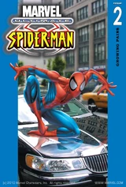 | |
| Ultimate Spider-Man #3 Wannabe | 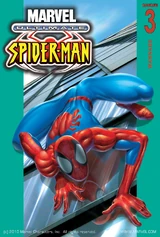 | |
| Ultimate Spider-Man #4 With Great Power | 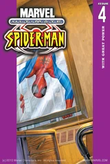 | |
| Ultimate Spider-Man #5 Life Lessons | ||
| Ultimate Spider-Man #6 Big Time Super Hero | 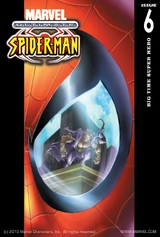 | |
| Ultimate Spider-Man #7 Secret Identity | 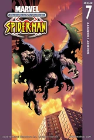 | |
| Ultimate Spider-Man #8 Working Stiff | 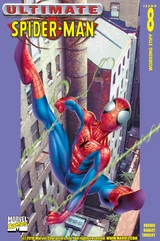 | |
| Ultimate Spider-Man #9 Meet the Enforcers | 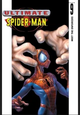 | |
| Ultimate Spider-Man #10 The Worst Thing | 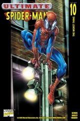 | |
| Ultimate Spider-Man #11 Discovery | 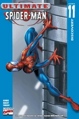 | |
| Ultimate Spider-Man #12 Battle Royal | 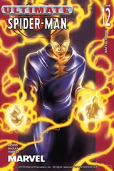 | |
| Ultimate Spider-Man #13 Confessions | ||
| Ultimate Spider-Man #14 Doctor Octopus | 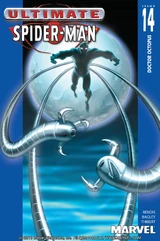 | |
| Ultimate Spider-Man #15 Confrontations | 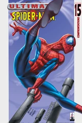 | |
| Ultimate Spider-Man #16 Kraven the Hunter | 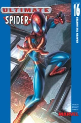 | |
| Ultimate Spider-Man #17 Taking Advantage | 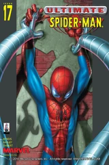 | |
| Ultimate Spider-Man #18 The Cycle | 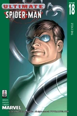 | |
| Ultimate Spider-Man #19 Piece of Work | 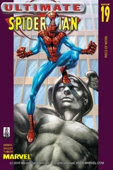 | |
| Ultimate Spider-Man #20 Live | 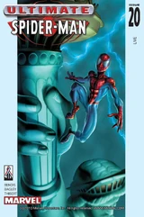 | |
| Ultimate Spider-Man #21 Hunted | 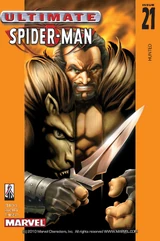 | |
| Ultimate Spider-Man #22 Reflections of... | 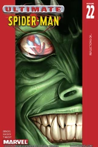 | |
| Ultimate Spider-Man #23 Responsible | 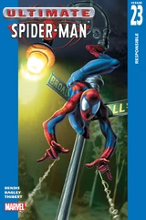 | |
| Ultimate Spider-Man #24 Ultimatum | 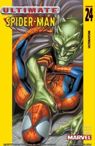 | |
| Ultimate Spider-Man #25 Plasmids | 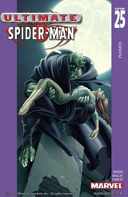 | |
| Ultimate Spider-Man #26 Circles | 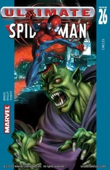 | |
| Ultimate Spider-Man #27 Illegal | 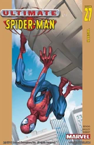 | |
| Ultimate Spider-Man #28 Sidetracked | 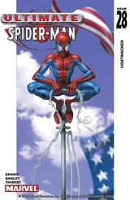 | |
| Ultimate Spider-Man #29 Stolen Identity | 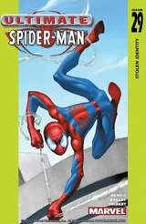 | |
| Ultimate Spider-Man #30 Emergency | 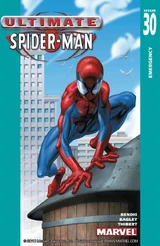 | |
| Ultimate Spider-Man #31 Black Van | 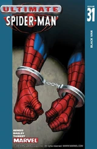 | |
| Ultimate Spider-Man #32 Just a Guy | 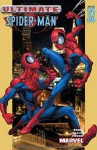 | |
| Ultimate Spider-Man #33 Origins | 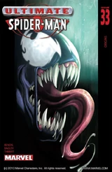 | |
| Ultimate Spider-Man #34 Inheritance | 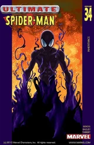 | |
| Ultimate Spider-Man #35 Legacy | 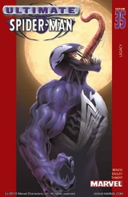 | |
| Ultimate Spider-Man #36 Today | ||
| Ultimate Spider-Man #37 Still | 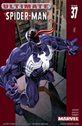 | |
| Ultimate Spider-Man #38 Father's Pride | 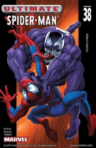 | |
| Ultimate Spider-Man #39 Therapy | 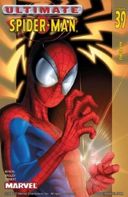 | |
| Ultimate Spider-Man #40 Average Bear | 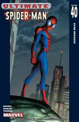 | |
| Ultimate Spider-Man #41 The Letter | 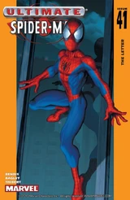 | |
| Ultimate Spider-Man #42 Temptations | 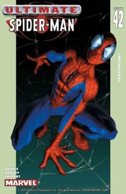 | |
| Ultimate Spider-Man #43 Help | 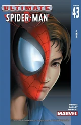 | |
| Ultimate Spider-Man #44 Tampered | 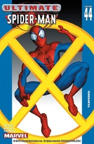 | |
| Ultimate Spider-Man #45 Guilt | 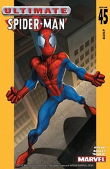 | |
| Ultimate Spider-Man #46 Afterwards... | 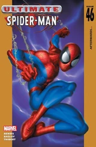 | |
| Ultimate Spider-Man #47 Men of Influence | 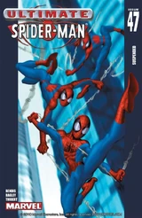 | |
| Ultimate Spider-Man #48 Suspended | 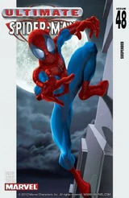 | |
| Ultimate Spider-Man #49 Hero | 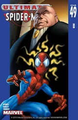 | |
| Ultimate Spider-Man #50 Black Cat | ||
| Ultimate Spider-Man #51 Shadow Puppets | 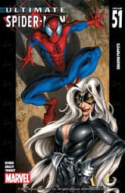 | |
| Ultimate Spider-Man #52 Cat Fight | 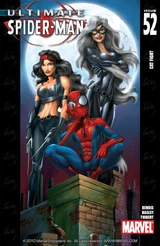 | |
| Ultimate Spider-Man #53 Daughters | 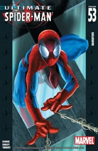 | |
| Ultimate Spider-Man #54 Hollywood: Part 1 | 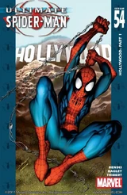 | |
| Ultimate Spider-Man #55 Hollywood: Part 2 | 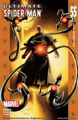 | |
| Ultimate Spider-Man #56 Hollywood: Part 3 | ||
| Ultimate Spider-Man #57 Hollywood: Part 4 | ||
| Ultimate Spider-Man #58 Hollywood: Part 5 | ||
| Ultimate Spider-Man #59 Hollywood: Part 6 | ||
| Ultimate Spider-Man #60 Carnage: Part 1 | ||
| Ultimate Spider-Man #61 Carnage: Part 2 | ||
| Ultimate Spider-Man #62 Carnage: Part 3 | ||
| Ultimate Spider-Man #63 Carnage: Part 4 | ||
| Ultimate Spider-Man #64 Carnage: Part 5 | ||
| Ultimate Spider-Man #65 Detention | ||
| Ultimate Spider-Man #66 Even We Don't Believe This | ||
| Ultimate Spider-Man #67 Jump the Shark | ||
| Ultimate Spider-Man #68 Popular | ||
| Ultimate Spider-Man #69 Meet Me | ||
| Ultimate Spider-Man #70 Strange: Part 1 | ||
| Ultimate Spider-Man #71 Strange: Part 2 | ||
| Ultimate Spider-Man #72 Hobgoblin (Part 1) | ||
| Ultimate Spider-Man #73 Hobgoblin (Part 2) | ||
| Ultimate Spider-Man #74 Hobgoblin (Part 3) | ||
| Ultimate Spider-Man #75 Hobgoblin (Part 4) | ||
| Ultimate Spider-Man #76 Hobgoblin (Part 5) | ||
| Ultimate Spider-Man #77 Hobgoblin (Part 6) | ||
| Ultimate Spider-Man #78 Dumped | ||
| Ultimate Spider-Man #79 Warriors (Part 1) | ||
| Ultimate Spider-Man #80 Warriors (Part 2) | ||
| Ultimate Spider-Man #81 Warriors (Part 3) | ||
| Ultimate Spider-Man #82 Warriors (Part 4) | ||
| Ultimate Spider-Man #83 Warriors (Part 5) | ||
| Ultimate Spider-Man #84 Warriors (Part 6) | ||
| Ultimate Spider-Man #85 Warriors (Part 7) | ||
| Ultimate Spider-Man #86 Silver Sable: Part 1 | ||
| Ultimate Spider-Man #87 Silver Sable: Part 2 | ||
| Ultimate Spider-Man #88 Silver Sable: Part 3 | ||
| Ultimate Spider-Man #89 Silver Sable (Part 4) | ||
| Ultimate Spider-Man #90 Silver Sable (Part 5) | ||
| Ultimate Spider-Man #91 Deadpool (Part 1) | ||
| Ultimate Spider-Man #92 Deadpool (Part 2) | ||
| Ultimate Spider-Man #93 Deadpool (Part 3) | ||
| Ultimate Spider-Man #94 Deadpool (Part 4) | ||
| Ultimate Spider-Man #95 Morbius (Part 1) | ||
| Ultimate Spider-Man #96 Morbius (Part 2) | ||
| Ultimate Spider-Man #97 Clone Saga: Part 1 | ||
| Ultimate Spider-Man #98 Clone Saga: Part 2 | ||
| Ultimate Spider-Man #99 Clone Saga: Part 3 | ||
| Ultimate Spider-Man #100 Clone Saga: Part 4 | ||
| Ultimate Spider-Man #101 Clone Saga: Part 5 | ||
| Ultimate Spider-Man #102 Clone Saga: Part 6 | ||
| Ultimate Spider-Man #103 Clone Saga: Part 7 | ||
| Ultimate Spider-Man #104 Clone Saga: Part 8 | ||
| Ultimate Spider-Man #105 Clone Saga: Epilogue | ||
| Ultimate Spider-Man #106 Ultimate Knights (Part 1) | ||
| Ultimate Spider-Man #107 Ultimate Knights (Part 2) | ||
| Ultimate Spider-Man #108 Ultimate Knights (Part 3) | ||
| Ultimate Spider-Man #109 Ultimate Knights (Part 4) | ||
| Ultimate Spider-Man #110 Ultimate Knights (Part 5) | ||
| Ultimate Spider-Man #111 The Talk | ||
| Ultimate Spider-Man #112 Death of a Goblin (Part 1) | ||
| Ultimate Spider-Man #113 Death of a Goblin (Part 2) | ||
| Ultimate Spider-Man #114 Death of a Goblin (Part 3) | ||
| Ultimate Spider-Man #115 Death of a Goblin (Part 4) | ||
| Ultimate Spider-Man #116 Death of a Goblin (Part 5) | ||
| Ultimate Spider-Man #117 Death of a Goblin (Part 6) | ||
| Ultimate Spider-Man #118 Spider-Man and His Amazing Friends (Part 1) | ||
| Ultimate Spider-Man #119 Spider-Man and His Amazing Friends (Part 2) | ||
| Ultimate Spider-Man #120 Spider-Man and His Amazing Friends (Part 3) | ||
| Ultimate Spider-Man #121 Omega Red | ||
| Ultimate Spider-Man #122 The Worst Day In Peter Parker's Life | ||
| Ultimate Spider-Man #123 War of the Symbiotes: Part 1 | ||
| Ultimate Spider-Man #124 War of the Symbiotes: Part 2 | ||
| Ultimate Spider-Man #125 War of the Symbiotes: Part 3 | ||
| Ultimate Spider-Man #126 War of the Symbiotes: Part 4 | ||
| Ultimate Spider-Man #127 War of the Symbiotes: Part 5 | ||
| Ultimate Spider-Man #128 War of the Symbiotes: Part 6 | ||
| Ultimate Spider-Man #129 Ultimatum (Part 1) | ||
| Ultimate Spider-Man #130 Ultimatum (Part 2) | ||
| Ultimate Spider-Man #131 Ultimatum (Part 3) | ||
| Ultimate Spider-Man #132 Ultimatum (Part 4) | ||
| Ultimate Spider-Man #133 Ultimatum (Part 5) | ||
| Ultimate Spider-Man #200 | ||
| Ultimate Spider-Man #½ Ultimate Spider-Man ½ |